For iPhone Duo, iPad and iPhone
Race Day
A live NASCAR companion for the second screen. Timing and scoring, your drivers' cockpits, every team's radio transcribed as it's spoken, strategy and a live track map, all in step with the TV.
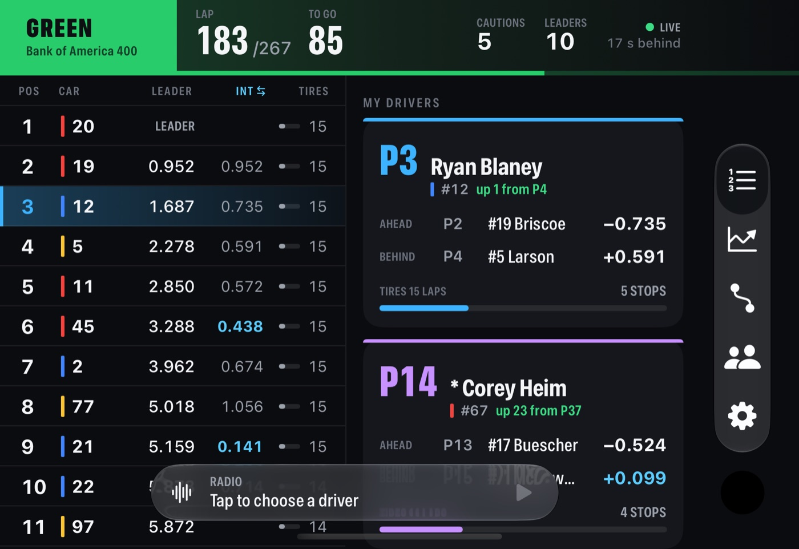
The scoring pylon, rebuilt for a tablet
The running order owns the screen and never moves around. Everything a fan checks between corners is one glance away.
- Gap to the leader and the car ahead, lit blue when it's under half a second: a battle.
- Last lap, 5-lap pace, laps on tires, stops and laps led.
- Places gained since the green, with the manufacturer's color on every car.
- Race control's latest call under the flag, and the real white flag from the lap count.
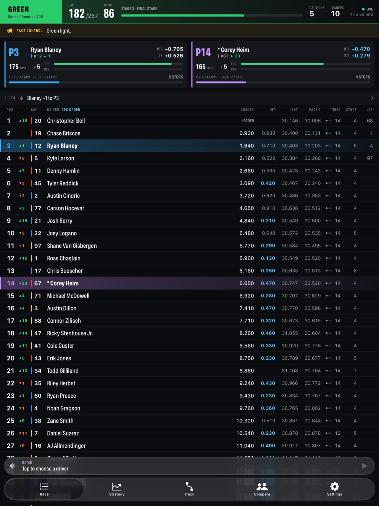
Ride along with your favorites
Each favorite gets a card that reads like a crew chief's screen.
- Live cockpit from car telemetry: speed, gear, throttle and brake.
- The cars ahead and behind with the gaps either way.
- Laps on tires against the usual stint, fuel laps left, and the pit window spelled out.
- Favorites are tinted through every page, so you never lose them in a 38-car field.
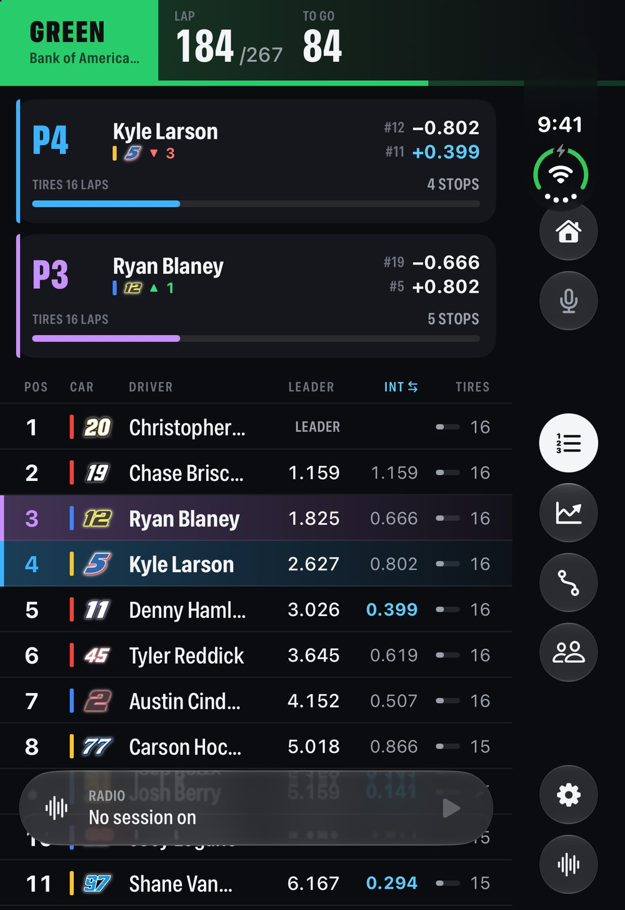
Hear the win. Read it too.
Talladega, October 25, 2026. Kyle Larson comes from seventh off the last corner to win the YellaWood 500, his first superspeedway win. Race Day had his radio open the whole way, and every word of the spotter's call was on screen as it happened.
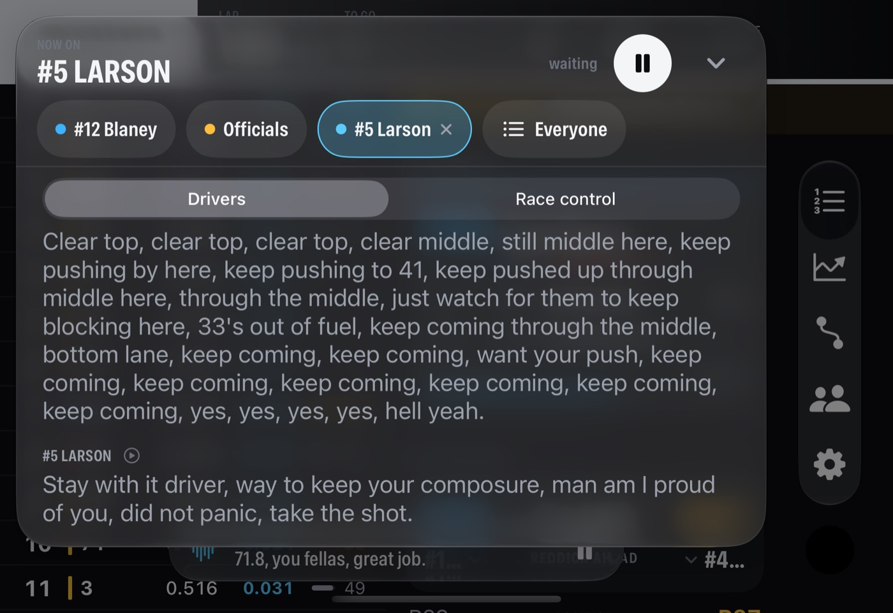
…keep coming through the middle, bottom lane, keep coming, keep coming, want your push, keep coming, keep coming… yes, yes, yes, yes, hell yeah.
Stay with it driver, way to keep your composure, man am I proud of you, did not panic, take the shot.
More than 40 team channels per Cup race are recorded, transcribed on a local GPU, and lined up with the TV delay, so the words appear as you hear them. Lines are tagged (fuel, tires, handling, restarts, battles), and you can tap any line to hear it again. Listen to your two drivers at once, scan whoever is talking, or pick anyone in the field. Radio boost lifts quiet voices, and the radio keeps playing with the screen locked.
Talk to your friend at the track
At the track, cell service is gone and the cars are loud. Race Day turns two phones into a headset intercom, so you and your friend can talk over the race while each of you hears your own team radio.
- Phone to phone over Apple's peer-to-peer Wi-Fi, the same link AirDrop uses. No cell signal and no Wi-Fi network needed.
- Hold to talk, or leave the mic open.
- The radio dips while your friend is talking, then comes back.
- Works with AirPods and other Bluetooth headsets, and finds the other phone again by itself if you walk out of range.
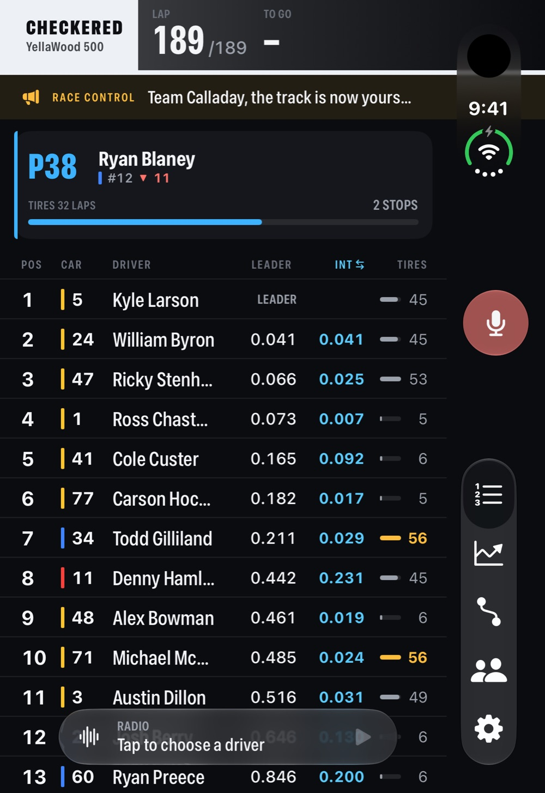
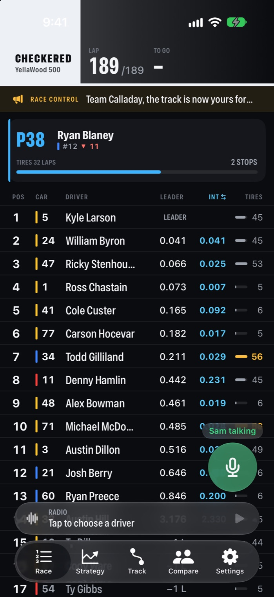
See the race the pit box sees
- Your drivers' position every lap, with cautions shaded.
- A pit-window board for the whole field: laps on tires against the usual stint.
- Recent stops: time in the box, tires taken, places gained or lost.
- Standings as they would stand now, with points earned today.
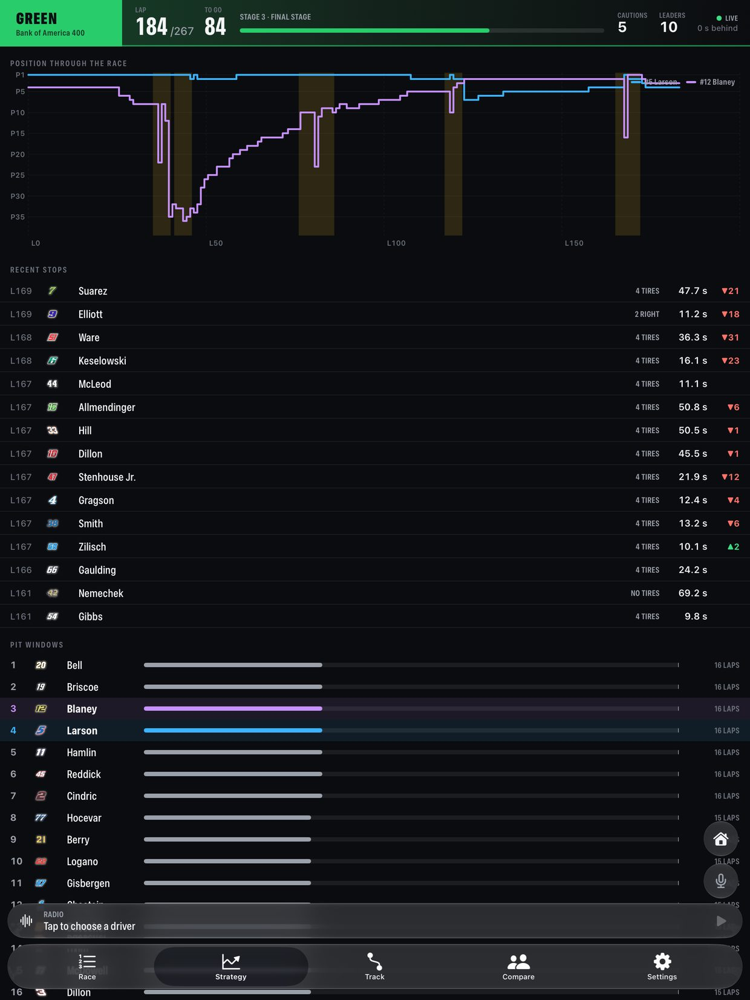
A live map placed by GPS
- Every car on the real track outline, positioned from its GPS.
- Your drivers labeled in their colors, the leader ringed in gold.
- Tap any car to follow it, with its gaps and cockpit.
- Closest battles on track, tightest first.
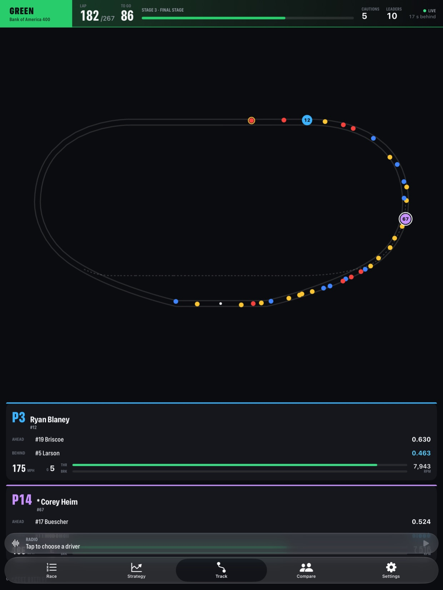
Any two drivers, head to head
- The gap between them and both positions through the race.
- Side-by-side stats with the better number lit.
- Both cockpits live.
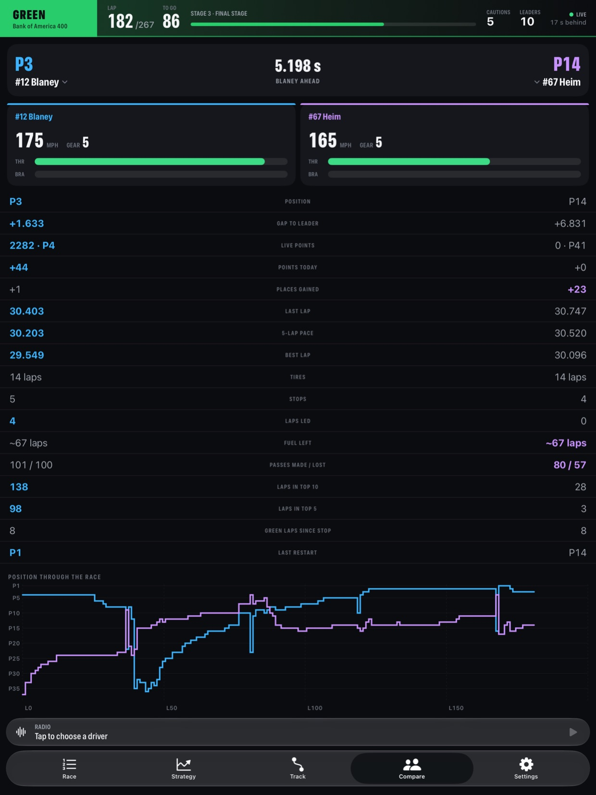
Designed for each posture
The same race fits an iPad, an iPhone, and every way an iPhone Duo can fold.
- Sideways: the timing tower and your drivers side by side, page tabs in the strip beside the clock.
- Half open like a laptop: the page on top, a control deck with the radio below the fold.
- Open on its side like a book: the race on the left page, details on the right.
- Practice and qualifying turn the tower into a timing sheet by best lap, with long-run pace.
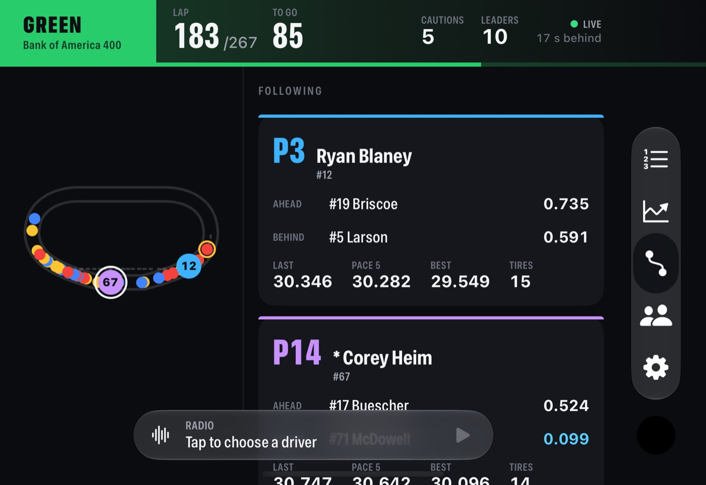
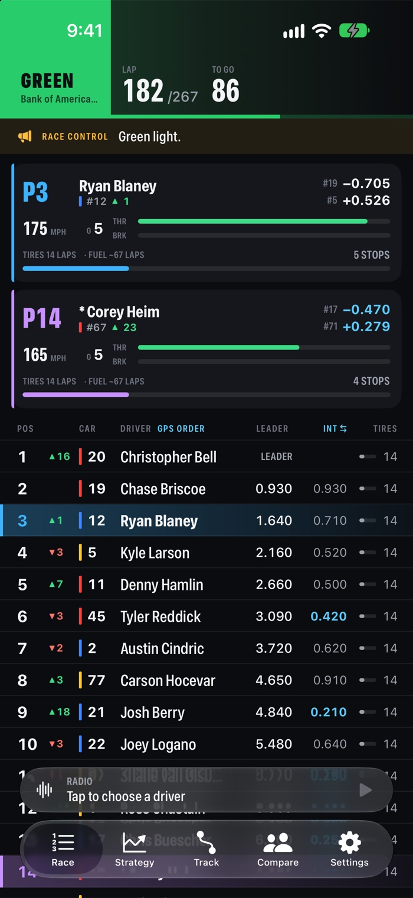
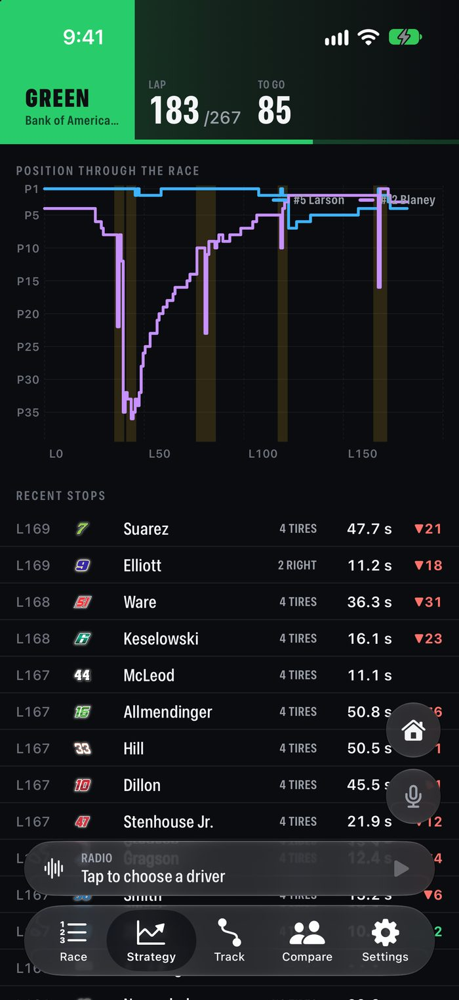
How it works
A home race server does the heavy lifting
A small server records every session in full: timing, telemetry, pit stops and every radio channel. It transcribes the radio on a local GPU and sends the apps one clean, delayed stream that matches the TV. Any race it has recorded can be replayed later, radio included.
About this project. Race Day is a personal, non-commercial project shared only with a few invited friends. It is not affiliated with or endorsed by NASCAR. Screenshots are real: a recorded 2026 Cup race at Charlotte, replayed through the app in Apple's iPad, iPhone and iPhone Duo simulators.